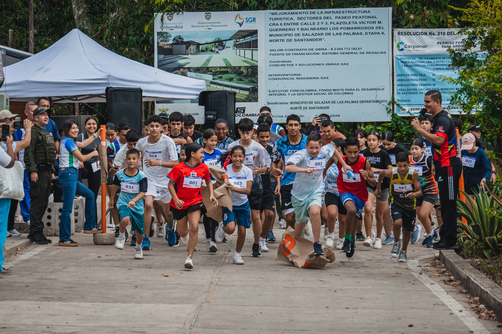
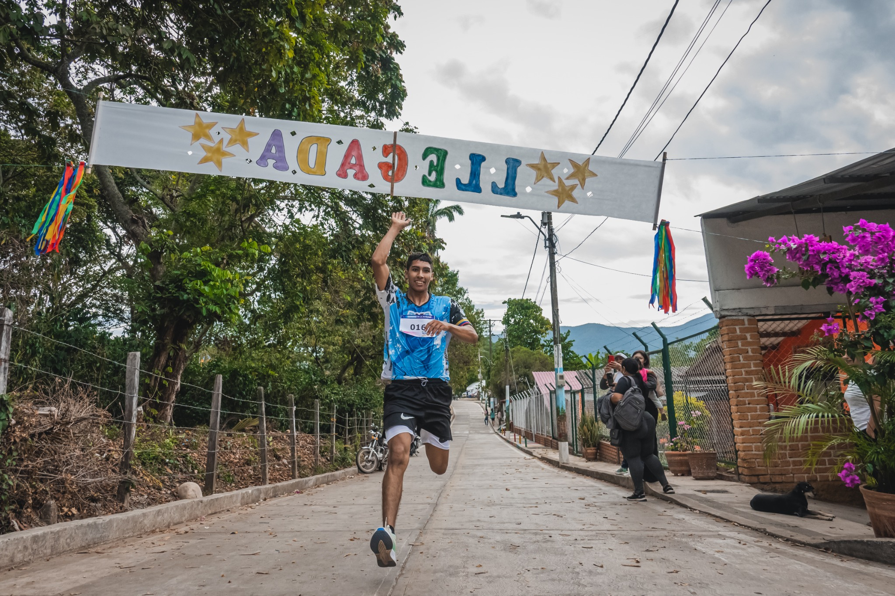
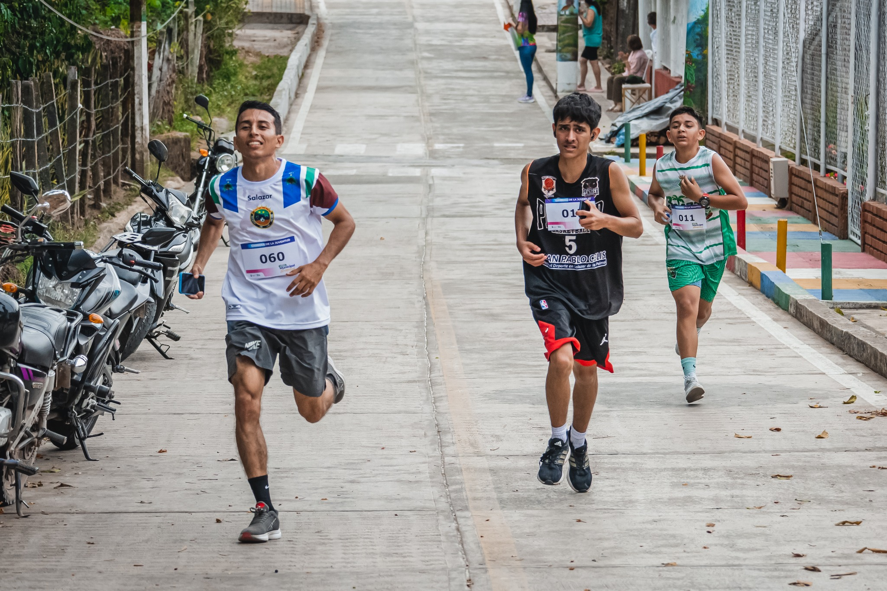
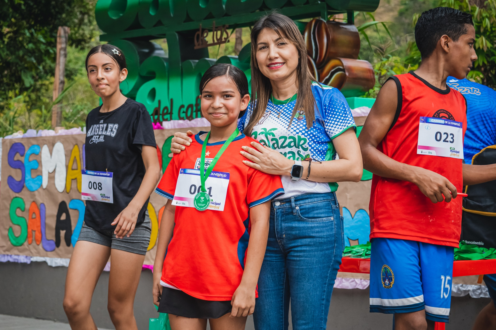
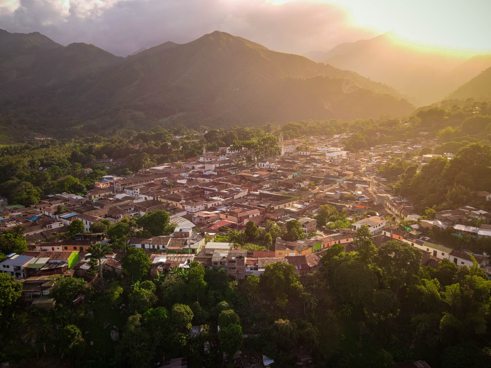
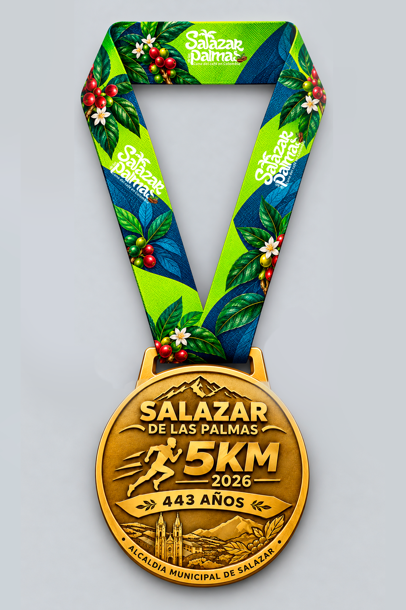
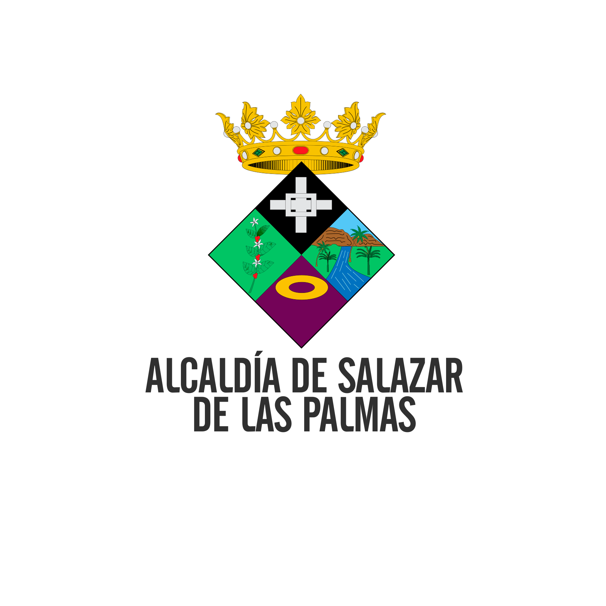

01
Registra tus datos
Escribe tus datos personales y de contacto. Revisa todo antes de enviar el formulario.
Un encuentro con el deporte, la memoria y el orgullo de nuestra tierra. Celebremos juntos los 443 años de Salazar de las Palmas.
La Carrera Atlética Salazar de las Palmas 5K invita a la comunidad a celebrar los 443 años del municipio a través del deporte, la actividad física y el orgullo por nuestra tierra.
Prepárate para vivir una jornada de energía, esfuerzo y espíritu deportivo.
La participación está reservada exclusivamente a personas que tengan 18 años o más.
Una oportunidad para celebrar juntos la historia y tradición de Salazar de las Palmas.
Momentos de nuestras calles, nuestra gente y la energía de quienes se atreven a llegar a la meta. Esta galería celebra el espíritu deportivo de Salazar de las Palmas.





La medalla conmemorativa celebra el deporte y la historia de nuestro municipio.

Completa el formulario con tus datos reales. La organización utilizará la información necesaria para administrar tu inscripción y coordinar el evento.
Escribe tus datos personales y de contacto. Revisa todo antes de enviar el formulario.
Lee el reglamento y las autorizaciones de tratamiento de datos aplicables al evento.
Cuando se complete el envío, verás un mensaje de confirmación en esta página.
Los campos marcados con * son obligatorios.
La carrera está dirigida exclusivamente a personas mayores de 18 años. La organización debe verificar el cumplimiento de este requisito.
La fecha límite prevista es el jueves 29 de octubre de 2026. Confirma con la organización que esta fecha continúa vigente antes de publicar la página.
Al completar correctamente el envío, la página mostrará una confirmación. La organización podrá contactarte mediante los datos suministrados.
La organización debe publicar aquí los enlaces oficiales al reglamento, el recorrido, el horario y el punto de salida antes de abrir las inscripciones.

Corre por la historia. Vive el reto.